本文主要对docker的基础知识进行介绍，了解docker的镜像、容器和仓库。
1.镜像
docker的镜像实由一层一层的文件系统组成，这种层级的文件系统采用联合文件系统编写（UnionFS)，优点：共享资源。
即有多个镜像从相同的base镜像构建而来，那么宿主机上只需要在磁盘上保存一份base镜像，同时内存中只需要加载一份base镜像，就可以为所有容器提供服务了，且镜像的每一层都能被共享。
bootfs(boot files system)
主要包含bootloader和kernel，bootloader主要是引导加载kernel。Linux刚启动会加载bootfs文件系统，在docker镜像的最底层就是bootfs。这一层与典型的Linux/Unix系统一样的，包含boot加载器和内核。当boot加载完成后，整个内核就在内存当中，此时内存的使用权由bootfs转交为内核，然后系统也会卸载bootfs。
典型的Linux启动到运行需要两个FS - bootfs + rootfs (从功能角度而非文件系统角度)
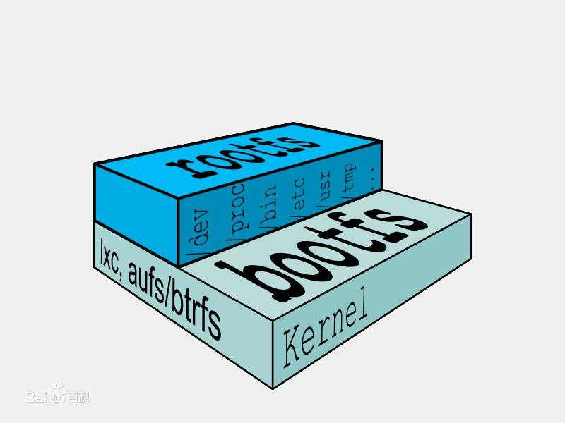
rootfs
rootfs（(root file system) ）在bootfs之上，包含的就是典型的Linux系统中的/dev,/proc,/bin,/ect等标准目录和文件。rootfs就是不同操作系统的发行版，比如Ubuntu，CentOS等等。
典型的Linux在启动后，首先将 rootfs 置为 readonly, 进行一系列检查, 然后将其切换为 “readwrite” 供用户使用。在docker中，起初也是将 rootfs 以readonly方式加载并检查，然而接下来利用 union mount 的将一个 readwrite 文件系统挂载在 readonly 的rootfs之上，并且允许再次将下层的 file system设定为readonly 并且向上叠加, 这样一组readonly和一个writeable的结构构成一个container的运行目录, 每一个被称作一个Layer。（图 [1,2]）
| 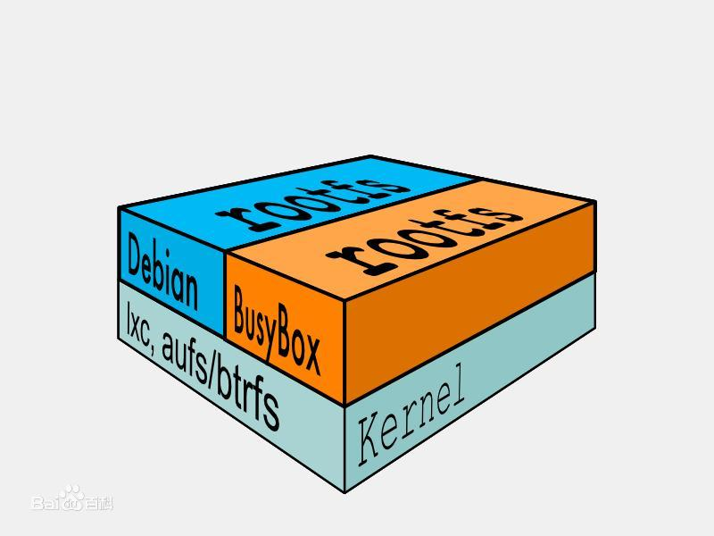 |  |
|---|---|
| 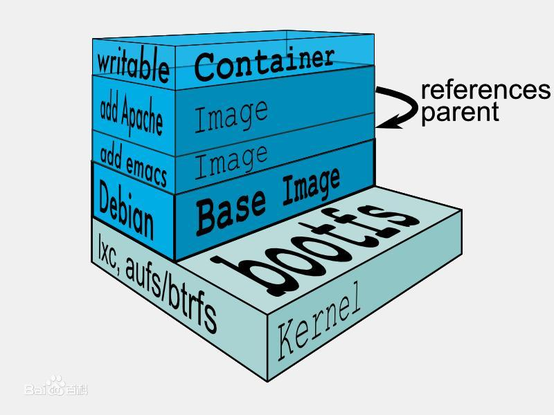 | |
| 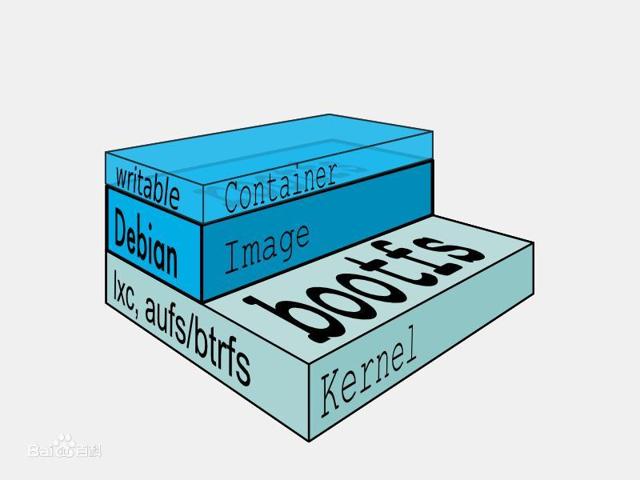 | |
| 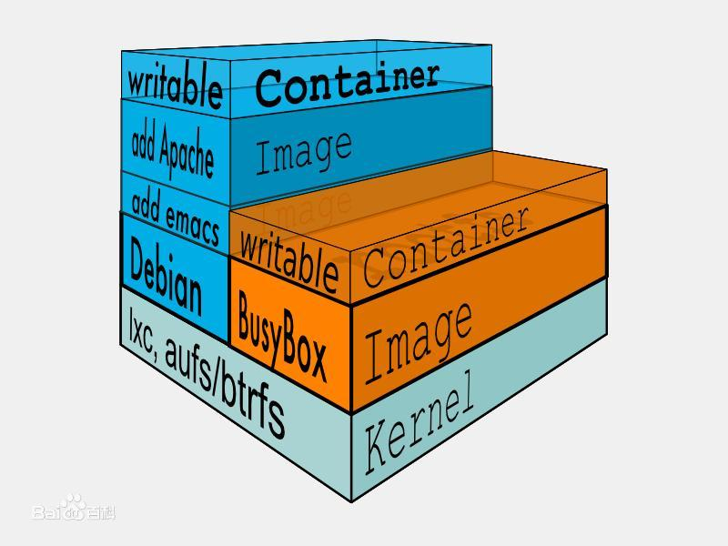 |
参考 ：https://baike.baidu.com/item/Docker/13344470?fr=aladdin
2.镜像命令
Docker中与镜像操作相关的命令都在docker image这条子命令下，通过docker image –help这条命令，可以看到docker image子命令的详细文档，如下：
1
2
3
4
5
6
7
8
9
10
11
12
13
14
15
16
17
Usage: docker image COMMAND
Manage images
Commands:
build Build an image from a Dockerfile(构建镜像的命令)
history Show the history of an image(显示镜像构建历史过程)
import Import the contents from a tarball to create a filesystem image(导入一个由容器导出的镜像)
inspect Display detailed information on one or more images(显示一个镜像的详细信息)
load Load an image from a tar archive or STDIN(从一个文件或标准输入流中导入镜像)
ls List images(查看镜像列表)
prune Remove unused images(删除虚悬镜像)
pull Pull an image or a repository from a registry(从仓库拉取镜像)
push Push an image or a repository to a registry(推送镜像到仓库)
rm Remove one or more images(删除镜像)
save Save one or more images to a tar archive (streamed to STDOUT by default)(保存镜像到文件)
tag Create a tag TARGET_IMAGE that refers to SOURCE_IMAGE(给镜像打标签)
1.构建镜像
构建镜像方式：
从官方仓库或其他镜像仓库拉取别人构建好的镜像
构建自己的镜像 【1. commit方法 2.dockerfile方法（推荐）】
1
2
3
4
5
6
7
8
9
10
11
12
13
14
15
16
17
18
19
20
21
22
23
24
25
26
27
28
# 拉取镜像
# 下载最新版本
(base) zhengkan03@ubuntu:~/桌面$ docker pull mysql
Using default tag: latest
latest: Pulling from library/mysql
69692152171a: Pull complete # 分层下载
1651b0be3df3: Pull complete
951da7386bc8: Pull complete
0f86c95aa242: Pull complete
37ba2d8bd4fe: Pull complete
6d278bb05e94: Pull complete
497efbd93a3e: Pull complete
f7fddf10c2c2: Pull complete
16415d159dfb: Pull complete
0e530ffc6b73: Pull complete
b0a4a1a77178: Pull complete
cd90f92aa9ef: Pull complete
Digest: sha256:d50098d7fcb25b1fcb24e2d3247cae3fc55815d64fec640dc395840f8fa80969
Status: Downloaded newer image for mysql:latest
docker.io/library/mysql:latest
# 等价
# docker pull mysql
# docker pull docker.io/library/mysql:latest
# 下载指定版本
# docker pull 镜像名[:版本号]
# docker pull mysql:5.7
1
2
3
4
5
6
# 构建镜像
# 1. commit方法
# 使用docker commit命令，我们可以将修改过的容器重新提交为一个镜像，如：
$ docker commit [容器ID] [新生成的文件名]
$ docker commit conntaner_id my-hello:1.0
$ docker commit -m='要提交的信息' -a='作者' 容器ID 要创建的目标镜像名：版本号
一般推荐编写Dockerfile来构建一种镜像，Docker Hub上的镜像都是采用这种方式构建的.
好处:我们不用把镜像分发给别人，而只是把Dockerfile和相应需要写入镜像的资料发给别人，别人也能自己构建镜像，安全透明
1. 构建步骤
- 编写一个dockerfile文件
- docker build 构建成为一个镜像
- docker run 运行镜像
- docker push 发布镜像（dockerHub,阿里云）
2. Dockerfile指令
1
2
3
4
5
6
7
8
9
10
11
12
FROM # 基础镜像，一切从这里开始
MAINTIANER # 镜像是谁编写的，姓名+邮箱
RUN # 镜像构建时候需要运行的命令
ADD # 步骤，tomcat镜像，添加内容
WORKDIR # 镜像的工作目录
VOLUME # 挂载的目录
EXPOSE # 暴露对外端口
CMD # 指定这个容器的启动时候的命令 ,只有最后一个会生效
ENTRYPOINT # 指定 容器启动时候要运行的命令，可以追加命令
ONBUILD # 当构建一个被继承Dockerfile，这个时候就会运行ONBUILD
COPY # 类似ADD ,将文件拷贝到镜像中
ENV # 构建的时候设置环境变量
Dockerfile文件
1
2
3
4
5
6
7
8
9
10
11
12
# 1.构建镜像文件
FROM ubuntu
MAINTAINER Zheng
RUN apt-get update
RUN apt-get install -y python3
RUN apt-get install -y python3-pip
RUN apt-get install -y vim
RUN pip3 install Flask
RUN mkdir app
ADD . /app
WORKDIR /app/app
CMD ["python3","flask01.py"]
开始构建镜像 编写好Dockerfile文件后，需要使用docker build命令进行构建，docker build命令的格式如下：
1
2
3
# 2. 通过这个文件创建镜像
#命令 docker build -f dockerfile文件路径 -t 镜像名:版本号
docker build -f Dockerfile myapp:1.0
测试运行刚创建的镜像
1
2
3
# 3.测试运行
docker run -it mycentos：1.0
# 可以使用docker inspect 镜像名 来查看镜像构建历史
3.CMD与ENTRYPOINT
# ENTRYPOINT 两种写法
ENTRYPOINT ["executable", "param1", "param2"] # 这是 exec 模式的写法，注意需要使用双引号
ENTRYPOINT command param1 param2 # 这是 shell 模式的写法
1. 配置容器启动后执行的命令，并且不可被 docker run 提供的参数覆盖。
2. 每个 Dockerfile 中只能有一个 ENTRYPOINT，当指定多个时，只有最后一个起效。
1
2
3
4
5
6
7
# CMD 三种写法
CMD ["executable","param1","param2"] # 使用 exec 执行，推荐方式；
CMD command param1 param2 # 在 /bin/sh 中执行，提供给需要交互的应用；
CMD ["param1","param2"] # 提供给 ENTRYPOINT 的默认参数；
1. 每个 Dockerfile 只能有一条 CMD 命令。如果指定了多条命令，只有最后一条会被执行。
2. 如果用户启动容器时候指定了运行的命令，则会覆盖掉 CMD 指定的命令。
举例说明，参考链接： https://www.cnblogs.com/lienhua34/p/5170335.html
从上面的说明，我们可以看到有两个共同点：
- 都可以指定shell或exec函数调用的方式执行命令；
- 当存在多个CMD指令或ENTRYPOINT指令时，只有最后一个生效；
而它们有如下差异：
| CMD | ENTRYPOINT |
|---|---|
| 容器启动时命令可以被docker run指定的命令覆盖 | docker run指定的参数当做ENTRYPOINT指定命令的参数 |
| 可以为ENTRYPOINT指令设置默认参数 | 参数可以由CMD提供 |
3.1 差异1
1
2
3
4
/diff1_folder
|--- startup.sh
|--- Dockerfile
startup.sh
1
2
#!/bin/bash
echo "in startup, args: $@"
Dockerfile
1
2
3
4
5
6
7
FROM ubuntu:14.04
MAINTAINER lienhua34@xxx.com
ADD startup /opt
RUN chmod a+x /opt/startup
CMD ["/opt/startup"]
1
2
3
4
5
6
7
8
9
10
11
12
13
14
15
16
17
# 使用docker build 创建镜像
sudo docker build -t test .
...
Successfully built 18a2d5066346
# 用docker run启动两个test:latest镜像的容器
# 第一个docker run命令没有指定容器启动时命令
# 第二个docker run命令指定了容器启动时的命令为 /bin/bash -c 'echo Hello'
lienhua34@test$ sudo docker run -ti --rm=true test
in startup, args:
lienhua34@test$ sudo docker run -ti --rm=true test /bin/bash -c 'echo Hello'
Hello
#可以看出， docker run命令启动容器时,指定的运行命令覆盖了Dockerfile文件中CMD指令指定的命令
开始对比，同样的手法对于ENTRYPOINT
1
2
3
/diff1_folder
|--- startup.sh
|--- Dockerfile
startup.sh与上相同
Dockerfile
1
2
3
4
5
6
7
FROM ubuntu:14.04
MAINTAINER lienhua34@xxx.com
ADD startup /opt
RUN chmod a+x /opt/startup
ENTRYPOINT [“/opt/startup”]
1
2
3
4
5
6
7
8
9
10
11
12
13
14
15
16
# 使用docker build 创建镜像
sudo docker build -t test .
...
Successfully built 78f8aca2edc2
# 用docker run启动两个test:latest镜像的容器
# 第一个docker run命令没有指定容器启动时命令
# 第二个docker run命令指定了容器启动时的命令为 /bin/bash -c 'echo Hello'
lienhua34@test$ sudo docker run -ti --rm=true test
in startup, args:
lienhua34@test$ sudo docker run -ti --rm=true test /bin/bash -c 'echo Hello'
in startup, args: /bin/bash -c echo Hello
# 可以看出，docker run命令指定的容器运行命令不能覆盖Dockerfile文件中ENTRYPOINT指令指定的命令，反而被当做参数传递给ENTRYPOINT指令指定的命令
3.2 差异2
1
2
3
/diff2_folder
|--- startup.sh
|--- Dockerfile
startup.sh
1
2
#!/bin/bash
echo "in startup, args: $@"
Dockerfile
1
2
3
4
5
6
7
8
FROM ubuntu:14.04
MAINTAINER lienhua34@xxx.com
ADD startup /opt
RUN chmod a+x /opt/startup
ENTRYPOINT ["/opt/startup", "arg1"]
CMD ["arg2"]
1
2
3
4
5
6
7
8
9
10
11
12
13
lienhua34@test$ sudo docker build -t test .
...
Successfully built 4684ba457cc2
# docker run启动两个test:latest镜像的容器
# 第一条docker run命令没有指定参数
# 第二条docker run命令指定了参数arg3，其运行结果如下
lienhua34@test$ sudo docker run -ti --rm=true test
in startup, args: arg1 arg2
lienhua34@test$ sudo docker run -ti --rm=true test arg3
in startup, args: arg1 arg3
# 可以看出,CMD指令为ENTRYPOINT指令设置了默认参数；从第二个容器的运行结果看出，docker run命令指定的参数覆盖了CMD指令指定的参数(arg3覆盖了arg2)
Dockerfile中出现ENTRYPOINT，则该ENTRYPOINT就是该容器启动命令；如果没有ENTRYPOINT，则CMD后面内容为容器启动命令；- 一个
Dockerfile中必须有一个CMD或者ENTRYPOINT - 如果两者同时出现，
CMD后面的内容为ENTRYPOINT的参数，且该内容可以被docker run后面的内容覆盖 - 如果出现多个
CMD或者ENTRYPOINT,则前面的CMD被最后一个CMD覆盖；前面的ENTRYPOINT被最后一个ENTRYPOINT覆盖
2.删除镜像
镜像在被运行后，就形成了容器；一般如果镜像已经被使用来创建容器，使用docker rmi命令来删除镜像会报下面的错误，告诉我们该镜像已经被使用，不允许删除。
1
Error response from daemon: conflict: unable to remove repository reference "mysql:5.7" (must force) - container ccd406c07a78 is using its referenced image e1e1680ac726
对于已经被用于创建容器的镜像，删除方法有两种
1
2
3
4
5
6
7
# 一种是先把容器删除，再删除镜像【推荐】
# 另一种则只需要在删除镜像的命令中跟一个-f参数便可，如：
# docker rmi 镜像名
docker rmi 镜像id
docker rmi -f 镜像id # 强制删除镜像
docker rmi -f $(docker ps -aq) # 删除所有镜像
3.拉取镜像
官方的https://hub.docker.com/提供了数十万个镜像提供大家下载，以拉取个人公有centos7.3镜像为例：
1
2
# docker pull 用户/仓库：标签
docker pull kennyyaohong/public:centos7.3
4.镜像推送
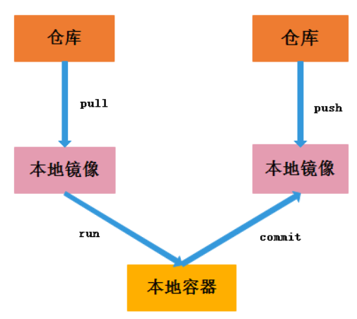
1
2
3
4
# 第一步 打标签 docker tag 镜像id 要推入仓库的用户名/要推入的仓库名:新定义的tag
docker tag e12a9ec48ab7 kennyyaohong/public:myproject_centos7.3
# 第二步 推送 docker push 要推入仓库的用户名/要推入的仓库名:镜像标签
docker push kennyyaohong/public:myproject_centos7.3
3. 容器命令
容器(Container)与镜像的关系，就如同面向编程中对象与类之间的关系。
因为容器是通过镜像来创建的，所以必须先有镜像才能创建容器，而生成的容器是一个独立于宿主机的隔离进程，并且有属于容器自己的网络和命名空间。
镜像由多个中间层(layer)组成，生成的镜像是只读的，但容器却是可读可写的，这是因为容器是在镜像上面添一层读写层(writer/read layer)来实现的。
1
2
3
4
5
6
7
8
9
10
11
12
13
14
15
16
17
18
19
20
21
22
23
24
25
26
27
28
29
30
Usage: docker container COMMAND
Manage containers
Commands:
attach Attach local standard input, output, and error streams to a running container
commit Create a new image from a container's changes(把容器保存为镜像)
cp Copy files/folders between a container and the local filesystem
create Create a new container(创建一个新的容器)
diff Inspect changes to files or directories on a container's filesyste m
exec Run a command in a running container(在一个运行的容器中执行命令)
export Export a container's filesystem as a tar archive
inspect Display detailed information on one or more containers
kill Kill one or more running containers(杀死一个或多个正在运行的容器)
logs Fetch the logs of a container
ls List containers(显示本地容器列表)
pause Pause all processes within one or more containers
port List port mappings or a specific mapping for the container
prune Remove all stopped containers
rename Rename a container(重命名容器)
restart Restart one or more containers(重启一个或多个容器)
rm Remove one or more containers(删除一个或多个容器)
run Run a command in a new container(运行一个新的容器)
start Start one or more stopped containers
stats Display a live stream of container(s) resource usage statistics
stop Stop one or more running containers(停止一个或多个容器)
top Display the running processes of a container
unpause Unpause all processes within one or more containers
update Update configuration of one or more containers
wait Block until one or more containers stop, then print their exit codes
1.启动/停止容器
1
2
3
4
5
6
7
8
# 通过镜像创建容器，指定容器name
# -i interactive -t persu tty
docker run -it --name myu1 ubuntu
# 启动/停止容器
docker start 容器id
docker restart 容器id
docker stop 容器id
docker kill 容器id # 强制停止当前容器
2.进入容器
1
2
3
4
5
6
7
8
9
10
11
12
13
14
# 进入容器
docker exec -it 容器id /bin/bash
# 示例
zhengkan03@ubuntu:~/桌面$ docker exec -it ffbdccd23b40 /bin/bash
root@ffbdccd23b40:/app# ls
data Dockerfile LSTM.py __pycache__ README.md requirements.txt static templates WindPlatform.py
# 进入容器
docker attach
# 区别
docker exec # 进入容器后开启一个新的终端
docker attach # 进入容器正在执行的终端，不会启动新的进程
3.退出容器
1
2
exit # 直接容器停止并退出
CTRL + P + Q # 容器不停止，退出
4.删除容器
1
2
docker rm 容器id # 删除指定容器 ，不能删除正在运行的容器
docker rm -f $(docker ps -aq) # 删除所有容器(强制)
5.查看容器
1
2
3
4
5
6
7
8
9
10
11
12
13
14
15
16
# 查看日志
docker logs
docker logs -tf -tail n 容器id # 查看最后n条日志 -t 显示时间戳 -f 跟随时间戳
# 示例
zhengkan03@ubuntu:~/桌面$ docker logs -tf --tail 10 26b6aea91aaa
2021-06-22T07:48:50.905093443Z
2021-06-22T07:48:50.905095407Z To try something more ambitious, you can run an Ubuntu container with:
2021-06-22T07:48:50.905097543Z $ docker run -it ubuntu bash
2021-06-22T07:48:50.905099590Z
2021-06-22T07:48:50.905101646Z Share images, automate workflows, and more with a free Docker ID:
2021-06-22T07:48:50.905103754Z https://hub.docker.com/
2021-06-22T07:48:50.905105835Z
2021-06-22T07:48:50.905107823Z For more examples and ideas, visit:
2021-06-22T07:48:50.905109929Z https://docs.docker.com/get-started/
2021-06-22T07:48:50.905112002Z
1
2
3
4
5
6
7
8
# 查看进程信息
docker top 容器id
# 示例
hengkan03@ubuntu:~/桌面$ docker top ffbdccd23b40
UID PID PPID C STIME TTY
root 4003 3981 1 16:02 ?
root 4048 4003 2 16:02 ?
1
2
3
4
5
6
7
8
9
10
11
12
13
14
15
16
17
18
19
20
21
22
23
24
25
26
27
28
29
30
31
32
33
34
35
36
37
38
39
40
41
42
43
44
45
46
47
48
49
50
51
52
53
54
55
56
57
58
59
60
61
62
63
64
65
66
67
68
69
70
71
72
73
74
75
76
77
78
79
80
81
82
83
84
85
86
87
88
89
90
91
92
93
94
95
96
97
98
99
100
101
102
103
104
105
106
107
108
109
110
111
112
113
114
115
116
117
118
119
120
121
122
123
124
125
126
127
128
129
130
131
132
133
134
135
136
137
138
139
140
141
142
143
144
145
146
147
148
149
150
151
152
153
154
155
156
157
158
159
160
161
162
163
164
165
166
167
168
169
170
171
172
173
174
175
176
177
178
179
180
181
182
183
184
185
186
187
188
189
190
191
192
193
194
195
196
197
198
199
200
201
202
203
204
205
206
207
208
209
210
211
212
213
214
215
216
217
218
219
220
221
# 查看容器元数据
docker inspect 容器id
# 示例
zhengkan03@ubuntu:~/桌面$ docker inspect ffbdccd23b40
[
{
"Id": "ffbdccd23b400f0e42060189c76b8497b6b97911c1bd98937d57417ea7751496",
"Created": "2021-06-22T08:02:15.072353163Z",
"Path": "python3",
"Args": [
"WindPlatform.py"
],
"State": {
"Status": "running",
"Running": true,
"Paused": false,
"Restarting": false,
"OOMKilled": false,
"Dead": false,
"Pid": 4003,
"ExitCode": 0,
"Error": "",
"StartedAt": "2021-06-22T08:02:15.329542854Z",
"FinishedAt": "0001-01-01T00:00:00Z"
},
"Image": "sha256:fa7b17d27d4a5dffbfef573effc6c11f8e08050df1d5479d58196a9d3e57e3e4",
"ResolvConfPath": "/var/lib/docker/containers/ffbdccd23b400f0e42060189c76b8497b6b97911c1bd98937d57417ea7751496/resolv.conf",
"HostnamePath": "/var/lib/docker/containers/ffbdccd23b400f0e42060189c76b8497b6b97911c1bd98937d57417ea7751496/hostname",
"HostsPath": "/var/lib/docker/containers/ffbdccd23b400f0e42060189c76b8497b6b97911c1bd98937d57417ea7751496/hosts",
"LogPath": "/var/lib/docker/containers/ffbdccd23b400f0e42060189c76b8497b6b97911c1bd98937d57417ea7751496/ffbdccd23b400f0e42060189c76b8497b6b97911c1bd98937d57417ea7751496-json.log",
"Name": "/nifty_euclid",
"RestartCount": 0,
"Driver": "overlay2",
"Platform": "linux",
"MountLabel": "",
"ProcessLabel": "",
"AppArmorProfile": "docker-default",
"ExecIDs": null,
"HostConfig": {
"Binds": null,
"ContainerIDFile": "",
"LogConfig": {
"Type": "json-file",
"Config": {}
},
"NetworkMode": "default",
"PortBindings": {},
"RestartPolicy": {
"Name": "no",
"MaximumRetryCount": 0
},
"AutoRemove": false,
"VolumeDriver": "",
"VolumesFrom": null,
"CapAdd": null,
"CapDrop": null,
"CgroupnsMode": "host",
"Dns": [],
"DnsOptions": [],
"DnsSearch": [],
"ExtraHosts": null,
"GroupAdd": null,
"IpcMode": "private",
"Cgroup": "",
"Links": null,
"OomScoreAdj": 0,
"PidMode": "",
"Privileged": false,
"PublishAllPorts": false,
"ReadonlyRootfs": false,
"SecurityOpt": null,
"UTSMode": "",
"UsernsMode": "",
"ShmSize": 67108864,
"Runtime": "runc",
"ConsoleSize": [
0,
0
],
"Isolation": "",
"CpuShares": 0,
"Memory": 0,
"NanoCpus": 0,
"CgroupParent": "",
"BlkioWeight": 0,
"BlkioWeightDevice": [],
"BlkioDeviceReadBps": null,
"BlkioDeviceWriteBps": null,
"BlkioDeviceReadIOps": null,
"BlkioDeviceWriteIOps": null,
"CpuPeriod": 0,
"CpuQuota": 0,
"CpuRealtimePeriod": 0,
"CpuRealtimeRuntime": 0,
"CpusetCpus": "",
"CpusetMems": "",
"Devices": [],
"DeviceCgroupRules": null,
"DeviceRequests": null,
"KernelMemory": 0,
"KernelMemoryTCP": 0,
"MemoryReservation": 0,
"MemorySwap": 0,
"MemorySwappiness": null,
"OomKillDisable": false,
"PidsLimit": null,
"Ulimits": null,
"CpuCount": 0,
"CpuPercent": 0,
"IOMaximumIOps": 0,
"IOMaximumBandwidth": 0,
"MaskedPaths": [
"/proc/asound",
"/proc/acpi",
"/proc/kcore",
"/proc/keys",
"/proc/latency_stats",
"/proc/timer_list",
"/proc/timer_stats",
"/proc/sched_debug",
"/proc/scsi",
"/sys/firmware"
],
"ReadonlyPaths": [
"/proc/bus",
"/proc/fs",
"/proc/irq",
"/proc/sys",
"/proc/sysrq-trigger"
]
},
"GraphDriver": {
"Data": {
"LowerDir": "/var/lib/docker/overlay2/683812c5b66d7ff4a6efc7479adf1d1dd69ef966d721104cb240fc810d023f7d-init/diff:/var/lib/docker/overlay2/17a7729fae872dc47beaddd86c02f5a95d1c8b17525e49e9457ff52e126dfc17/diff:/var/lib/docker/overlay2/fa10d11839ed464f0bd78ba5d9cb8fef8212e391876569631c0c04a59aa6e3e3/diff:/var/lib/docker/overlay2/b3c96094f9204af39890d1b8101278a98d7cc6c9c96e76c8fa2efb19d6181a0b/diff:/var/lib/docker/overlay2/c8fe8f5fd4e56531f6452da6ad5e8d300f2b48042a0c72a18fe4e11b3a369aec/diff:/var/lib/docker/overlay2/d28d47c24554c918e4814ef21087b7b334d6b02055c22a690714d9fe905d2407/diff:/var/lib/docker/overlay2/7343c35e91fb791e62ec43253c0ae1705b54dbe72ab65b1361e3a33f7bea1610/diff:/var/lib/docker/overlay2/1ff46c566494d2451a35636d7b28461d0ea2f2c2dd2af2920de52ee25ba53529/diff:/var/lib/docker/overlay2/e736e69f6bb2b87efb5ff8d693c4fd37d887502a06a5b9fabff96ad8153c7f9c/diff:/var/lib/docker/overlay2/18a19eee18a38481e0db17be63f675b6edddba3c72f6ec3ea99b2446b44198c8/diff:/var/lib/docker/overlay2/1cab6ed396a099774fbf46013adbb04aae80e173af01b08bbaebd4330ee5417e/diff:/var/lib/docker/overlay2/0a990a330b637a03878dece926106670d67a6848220433163e8b614e26a4d5fe/diff:/var/lib/docker/overlay2/dcb2bdf25e93fc854e9f20db7af8a15d8121591d0fdc4adf6fd3897c6ad42794/diff:/var/lib/docker/overlay2/32ff4d2f742d16b700a2e71d3e6c4508a976046869a472e52fb7057e2bab2f6c/diff:/var/lib/docker/overlay2/09f6a5b7a03f34cd7ddd7fab9ba8fe9aa3ddf9e232fabf3c54fc8602d80a2f1f/diff",
"MergedDir": "/var/lib/docker/overlay2/683812c5b66d7ff4a6efc7479adf1d1dd69ef966d721104cb240fc810d023f7d/merged",
"UpperDir": "/var/lib/docker/overlay2/683812c5b66d7ff4a6efc7479adf1d1dd69ef966d721104cb240fc810d023f7d/diff",
"WorkDir": "/var/lib/docker/overlay2/683812c5b66d7ff4a6efc7479adf1d1dd69ef966d721104cb240fc810d023f7d/work"
},
"Name": "overlay2"
},
"Mounts": [
{
"Type": "volume",
"Name": "506ba62d402f692daf45dad5a846cff4e553a710f541e78949466e0e92325ea9",
"Source": "/var/lib/docker/volumes/506ba62d402f692daf45dad5a846cff4e553a710f541e78949466e0e92325ea9/_data",
"Destination": "/sys/fs/cgroup",
"Driver": "local",
"Mode": "",
"RW": true,
"Propagation": ""
}
],
"Config": {
"Hostname": "ffbdccd23b40",
"Domainname": "",
"User": "",
"AttachStdin": false,
"AttachStdout": false,
"AttachStderr": false,
"Tty": false,
"OpenStdin": false,
"StdinOnce": false,
"Env": [
"PATH=/usr/local/sbin:/usr/local/bin:/usr/sbin:/usr/bin:/sbin:/bin",
"container=docker",
"DEBIAN_FRONTEND=noninteractive",
"LANG=en_US.UTF-8",
"LANGUAGE=en_US:en",
"LC_ALL=en_US.UTF-8"
],
"Cmd": [
"python3",
"WindPlatform.py"
],
"Image": "fa7b17d27d4a",
"Volumes": {
"/sys/fs/cgroup": {}
},
"WorkingDir": "/app",
"Entrypoint": null,
"OnBuild": null,
"Labels": {}
},
"NetworkSettings": {
"Bridge": "",
"SandboxID": "5f09b2026536f58852715967f0f1487828195533aa71896838e9074634e2a403",
"HairpinMode": false,
"LinkLocalIPv6Address": "",
"LinkLocalIPv6PrefixLen": 0,
"Ports": {},
"SandboxKey": "/var/run/docker/netns/5f09b2026536",
"SecondaryIPAddresses": null,
"SecondaryIPv6Addresses": null,
"EndpointID": "d88f24d5ea6a94c7a9ee0359d7bd829cf66e4dc70ebe7d827b709a8c0a836dd2",
"Gateway": "172.17.0.1",
"GlobalIPv6Address": "",
"GlobalIPv6PrefixLen": 0,
"IPAddress": "172.17.0.2",
"IPPrefixLen": 16,
"IPv6Gateway": "",
"MacAddress": "02:42:ac:11:00:02",
"Networks": {
"bridge": {
"IPAMConfig": null,
"Links": null,
"Aliases": null,
"NetworkID": "8f3b1769f0151de1a0edac3bf15a02e0828f2ea16919098ec4cdfd43f0f90ad4",
"EndpointID": "d88f24d5ea6a94c7a9ee0359d7bd829cf66e4dc70ebe7d827b709a8c0a836dd2",
"Gateway": "172.17.0.1",
"IPAddress": "172.17.0.2",
"IPPrefixLen": 16,
"IPv6Gateway": "",
"GlobalIPv6Address": "",
"GlobalIPv6PrefixLen": 0,
"MacAddress": "02:42:ac:11:00:02",
"DriverOpts": null
}
}
}
}
]
6.容器文件交互
1
2
3
4
# 容器内文件拷贝到主机
docker cp 容器id:路径 宿主机路径
# 示例
zhengkan03@ubuntu:~/桌面$ docker cp ffbdccd23b40:/app/ /home/zhengkan03/Desktop/
7.容器数据卷
docker的理念： 将应用和环境打包为一个镜像！
数据如果保存在容器中，那么容器被删除，数据就会丢失。所以，需要数据的持久化，并保存到本地。这样即便出现删库跑路的情况，数据库中的数据仍能保存到本地。
1
2
3
4
5
6
7
8
9
10
11
12
13
14
15
16
17
18
19
20
# 方式一：直接使用-v数据挂载
# 功能是实现双向绑定:容器内部添加文件，可同步到主机;主机指定文件夹下添加文件可同步到容器内;
docker run -it -v 宿主机目录:容器内路径
# 匿名挂载
docker run -d -P --name nginx01 -v /etc/nginx nginx
-v 容器内路径 # 匿名挂载，不建议使用
# 具名挂载
-v 卷名:容器内路径
-v 宿主机路径:容器内路径 # 指定路径挂载
# 通过 -v 容器内路径：ro rw 改变读写权限 ，设置后只能通过宿主机操作，不能容器内操作，默认可读可写
ro readonly # 容器内部只读
rw readwrite # 容器内部可读可写
docker run -d -P --name nginx02 -v jumping-nginx:/etc/nginx:/etc/nginx:ro nginx
docker run -d -P --name nginx02 -v jumping-nginx:/etc/nginx:/etc/nginx:rw nginx
# 启动后可以通过docker inspect 容器id 查看挂载->Mount
# 方式二： 通过dockerfile中的VOLUME挂载
创建本地数据卷
本地数据卷默认路径是在 /var/lib/docker/volumes/ 下
1
2
3
4
5
6
7
8
9
10
11
12
13
14
15
16
17
18
19
20
21
# 创建本地数据卷
docker volume create my-vol
# 列出本地数据卷
docker volume ls
DRIVER VOLUME NAME
local my-vol
# 查看本地数据卷
docker volume inspect my-vol
[
{
"CreatedAt": "2022-02-17T09:18:01+08:00",
"Driver": "local",
"Labels": {},
"Mountpoint": "/var/lib/docker/volumes/my-vol/_data",
"Name": "my-vol",
"Options": {},
"Scope": "local"
}
]
# 删除本地数据卷
docker volume rm my-vol
Dokcerfile中的VOLUME
1
2
3
4
FROM centos
VOLUME ["volume1","volume2"] # 这个地方进行匿名挂载,多个数据卷必须使用双引号分割
CMD echo "--end--"
CMD /bin/bash
1
2
3
4
zhengkan@station-ThinkStation-P340:~$ docker run -it 17e4 bash
root@70e127257ef8:/# ls
bin dev home lib32 libx32 mnt proc run srv tmp var volume2
boot etc lib lib64 media opt root sbin sys usr volume1 # 出现创建的两个数据卷volume1 和 volume2
1
2
3
4
5
root@station-ThinkStation-P340:/var/lib/docker/volumes# ls
19abfa4ee65418e8a78ee144bb582eccf026ca14c0c52cf3b88bec777cd58e6f backingFsBlockDev
1c4bf795cb696fe0de894c5164adf8a93ae96b9ae1aa9bcd59599a19be88ff84 metadata.db
# 进入/var/lib/docker/volumes,可见对应volume1和volume2的两个数据卷
# 每个卷中有个_data 文件夹与volume1、volume2中的内容对应
此时在容器内部会创建volume1和volume2两个卷（文件夹），同时在宿主机的/var/lib/docker/volumes/下会有随机生成的数据卷（文件夹）与volume1和volume2对应绑定；
当修改任意一个数据卷中的内容时，其对应数据卷中的内容也会发生更改
在创建项目时，通常需要用到具名挂载，方便宿主机的数据查找和应用，这个就需要用到docker-compose中的数据挂载了，详见docker-compose部分
4.Docker网络
1.docker0网卡
Docker使用Linux桥接，在宿主机虚拟一个Docker网桥(docker0)，Docker启动一个容器时会根据Docker网桥的网段分配给容器一个IP地址，称为Container-IP。
同时Docker网桥是每个容器的默认网关，因为在同一宿主机内的容器都接入同一个网桥，这样容器之间就能够通过容器的Container-IP直接通信。
1
2
3
4
5
6
7
8
9
10
11
12
13
14
15
16
17
18
19
20
root@station-ThinkStation-P340:~# ip addr
1: lo: <LOOPBACK,UP,LOWER_UP> mtu 65536 qdisc noqueue state UNKNOWN group default qlen 1000
link/loopback 00:00:00:00:00:00 brd 00:00:00:00:00:00
inet 127.0.0.1/8 scope host lo
valid_lft forever preferred_lft forever
inet6 ::1/128 scope host
valid_lft forever preferred_lft forever
2: eno1: <BROADCAST,MULTICAST,UP,LOWER_UP> mtu 1500 qdisc fq_codel state UP group default qlen 1000
link/ether d8:bb:c1:7b:4f:3e brd ff:ff:ff:ff:ff:ff
altname enp0s31f6
inet 192.168.31.65/24 brd 192.168.31.255 scope global dynamic noprefixroute eno1
valid_lft 33609sec preferred_lft 33609sec
inet6 fe80::bc7:f2c9:9736:8be5/64 scope link noprefixroute
valid_lft forever preferred_lft forever
3: docker0: <NO-CARRIER,BROADCAST,MULTICAST,UP> mtu 1500 qdisc noqueue state DOWN group default
link/ether 02:42:b2:72:14:f2 brd ff:ff:ff:ff:ff:ff
inet 172.17.0.1/16 brd 172.17.255.255 scope global docker0
valid_lft forever preferred_lft forever
inet6 fe80::42:b2ff:fe72:14f2/64 scope link
valid_lft forever preferred_lft forever
在每台装有docker的机器上，会有一张docker0的网卡，并且自动创建三个网络；docker内置的这三个网络可以在运行容器时，指定容器连接到那个网络；
1
2
3
4
5
6
7
8
9
root@station-ThinkStation-P340:~# docker network ls
NETWORK ID NAME DRIVER SCOPE
88d2242caf7b bridge bridge local
db2e9c36669e host host local
7016f0320535 none null local
# 指定连接网络
docker run --network=选项指定
root@station-ThinkStation-P340:~# docker run -it --network=host ubuntu
2.容器通讯
Docker网桥是宿主机虚拟出来的，并不是真实存在的网络设备，外部网络是无法寻址到的，这也意味着外部网络无法通过直接Container-IP访问到容器。
如果容器希望外部访问能够访问到，可以通过映射容器端口到宿主主机（端口映射），即docker run创建容器时候通过 -p 或 -P 参数来启用，访问容器的时候就通过[宿主机IP]:[容器端口]访问容器。
3.网络模式
| Docker 网络模式 | 配置 | 说明 |
|---|---|---|
| Host | – net = host | 容器将不会虚拟出自己的网卡，配置自己的IP等，而是使用宿主机的IP和端口 |
| Container | – net = container | 创建的容器不会创建自己的网卡，配置自己的IP，而是和一个指定的容器共享IP、端口范围。 |
| None | – net = none | 该模式关闭了容器的网络功能 |
| Bridge | – net= bridge | 此模式会为每一个容器分配、设置IP等，并将容器连接到一个docker0虚拟网桥，通过docker0网桥以及Iptables nat表配置与宿主机通信 【默认是就是该模式】 |
Host模式
如果启动容器的时候使用host模式，那么这个容器将不会获得一个独立的Network Namespace，而是和宿主机共用一个Network Namespace。容器将不会虚拟出自己的网卡，配置自己的IP等，而是使用宿主机的IP和端口。但是，容器的其他方面，如文件系统、进程列表等还是和宿主机隔离的。
使用host模式的容器可以直接使用宿主机的IP地址与外界通信，容器内部的服务端口也可以使用宿主机的端口，不需要进行NAT，host最大的优势就是网络性能比较好。但是docker host上已经使用的端口就不能再用了，网络的隔离性不好。
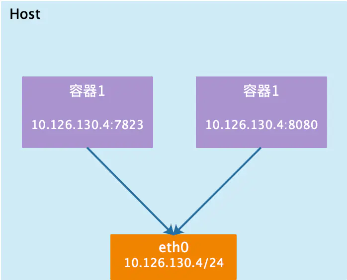
Container模式
这个模式指定新创建的容器和已经存在的一个容器共享一个 Network Namespace，而不是和宿主机共享。新创建的容器不会创建自己的网卡，配置自己的 IP，而是和一个指定的容器共享 IP、端口范围等。同样，两个容器除了网络方面，其他的如文件系统、进程列表等还是隔离的。两个容器的进程可以通过 lo 网卡设备通信。
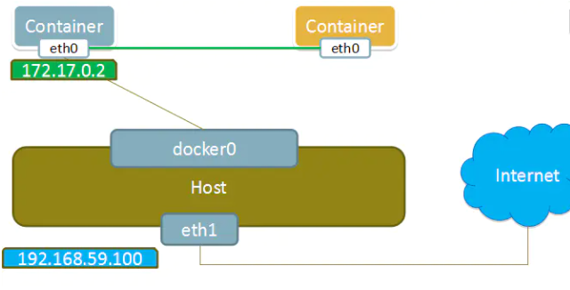
None模式
使用none模式，Docker容器拥有自己的Network Namespace，但是，并不为Docker容器进行任何网络配置。也就是说，这个Docker容器没有网卡、IP、路由等信息。需要我们自己为Docker容器添加网卡、配置IP等。
这种网络模式下容器只有lo回环网络，没有其他网卡。none模式可以在容器创建时通过–network=none来指定。这种类型的网络没有办法联网，封闭的网络能很好的保证容器的安全性。
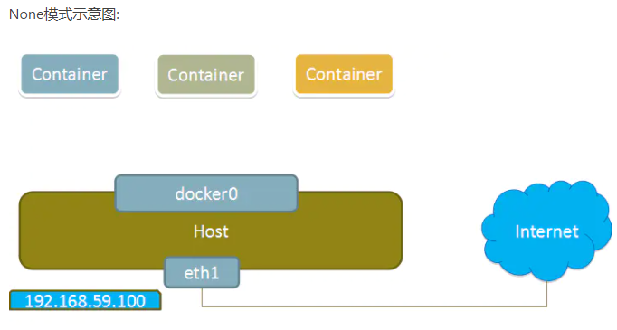
Bridge模式
当Docker进程启动时，会在主机上创建一个名为docker0的虚拟网桥，此主机上启动的Docker容器会连接到这个虚拟网桥上。虚拟网桥的工作方式和物理交换机类似，这样主机上的所有容器就通过交换机连在了一个二层网络中。
从docker0子网中分配一个IP给容器使用，并设置docker0的IP地址为容器的默认网关。在主机上创建一对虚拟网卡veth pair设备，Docker将veth pair设备的一端放在新创建的容器中，并命名为eth0（容器的网卡），另一端放在主机中，以vethxxx这样类似的名字命名，并将这个网络设备加入到docker0网桥中。可以通过brctl show命令查看。
bridge模式是docker的默认网络模式，不写–net参数，就是bridge模式。使用docker run -p时，docker实际是在iptables做了DNAT(目的地址转换)规则，实现端口转发功能。可以使用iptables -t nat -vnL查看。
1
2
3
4
5
6
7
8
9
10
11
12
13
14
15
16
17
18
19
20
21
22
23
24
25
26
27
28
29
30
31
32
33
34
35
36
37
38
docker network inspect bridge
[
{
"Name": "bridge",
"Id": "88d2242caf7b6af84d1d0aa2415d730f01637c52ef5fb8ca4d3916e1374f0147",
"Created": "2022-02-17T11:10:04.698146145+08:00",
"Scope": "local",
"Driver": "bridge",
"EnableIPv6": false,
"IPAM": {
"Driver": "default",
"Options": null,
"Config": [
{
"Subnet": "172.17.0.0/16",
"Gateway": "172.17.0.1"
}
]
},
"Internal": false,
"Attachable": false,
"Ingress": false,
"ConfigFrom": {
"Network": ""
},
"ConfigOnly": false,
"Containers": {},
"Options": {
"com.docker.network.bridge.default_bridge": "true",
"com.docker.network.bridge.enable_icc": "true",
"com.docker.network.bridge.enable_ip_masquerade": "true",
"com.docker.network.bridge.host_binding_ipv4": "0.0.0.0",
"com.docker.network.bridge.name": "docker0",
"com.docker.network.driver.mtu": "1500"
},
"Labels": {}
}
]
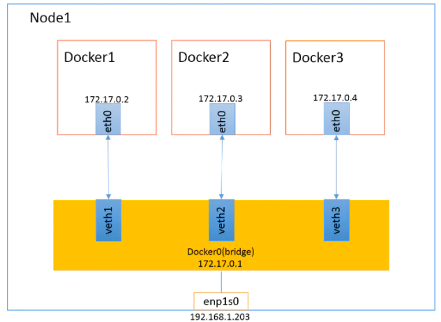
本节只是介绍了docker容器的4种网络模式，这些都是在创建容器的时候指定的，即通过docker命令行来执行，为了容器的编排与管理，后面会讲解docker-compose的内容，涉及到在文件中指定网络模式，详情见docker-compose文档。
5.docker可视化工具
docker官方提供了管理工具pointainer，使用步骤如下
1
2
3
4
5
6
7
# 1.拉取镜像
docker pull portainer/portainer
# 2. 创建挂载卷,
docker volume create portainer_data
# 3. 启动portainer
docker run -d -p 8000:8000 -p 9000:9000 --name=portainer --restart=always -v /var/run/docker.sock:/var/run/docker.sock -v portainer_data:/data portainer/portainer-ce
# 4.访问https://localhost:9000 即可访问和管理本机或者远端的docker
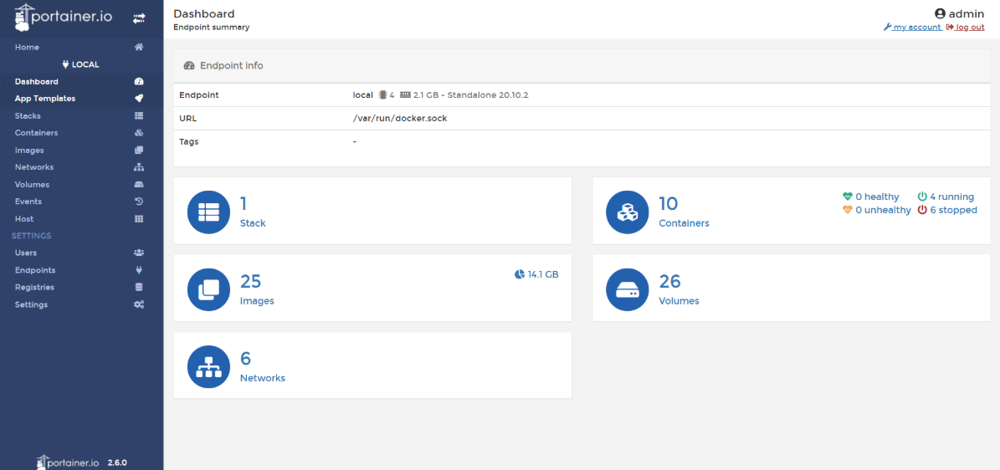